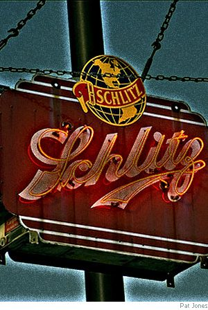

Lance Levens
Begging
My uncle’s scalp is split when Aunt Louise
arrives and spits a warning round. The tire
tool clanks down in my uncle’s blood. On his knees
now Clayton Smallwood begs her not to fire.
She jams the barrel in between his eyes.
“Get up!” she grumbles. He sweats drops of fear.
His rises, leaves, but not before he tries
his wicked tongue: “I curse your piss poor beer!“
Beneath this furious sun, beside her stone,
her flower inundated casket brings
to mind that night, the curse upon her Schlitz.
Then I spot Clayton, bald, a belly grown
to watermelon girth. His cell phone rings;
he whispers, in and out of sobbing fits.

The Measuring Hawk
We parked to watch him navigate a pine,
the power in his slow drop, wings wide spread.
The forked limb, silhouetted in the sun
tipped just above the evening’s foggy bed.
His call came out in echoings that sought
to sway us: he was noble, but he was small,
at fifty yards, a manager of heights
who numbered rats and king snakes in his thrall.
Aiming his one shot .22, dad leaned
on the blue hood. The perch the hawk was on
forced me to squint; he was squarely in the sun.
His craggy beak seemed cut from living stone.
My inward eye saw the shell rip his flesh,
splitting his gristle, saw him drop, wings awry,
crash through the prickly brush, hang there and flail,
the steady, thrusting tongue till he would die.
I’d seen my big dogs gut-ripped, dead from wild cats
that screamed at midnight but attacked at dawn,
but I had not measured what I knew.
What did I know of where their souls had gone?
The single shot cascaded through the woods.
The bark flew, he started; then, he fled to air
where he pumped hard, far beyond bullet range
into such sunlight my vision could not bear.
Lance Levens is a writer/Latin teacher from Savannah, GA. He has has published in Beloit Poetry Review, The Adirondack Review, The Danforth Review, et al. His chapbook Jubilate was published by the Pudding House Press in 2007. In that same year he was nominated for the Pushcart Prize in fiction.
|